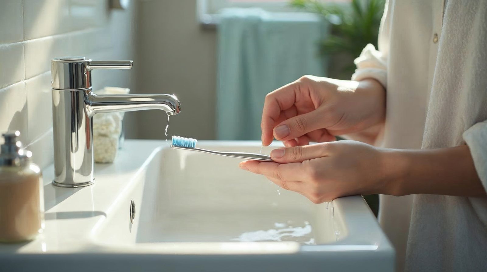
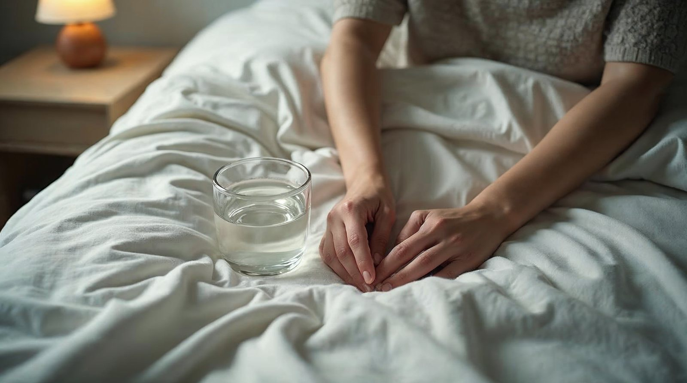
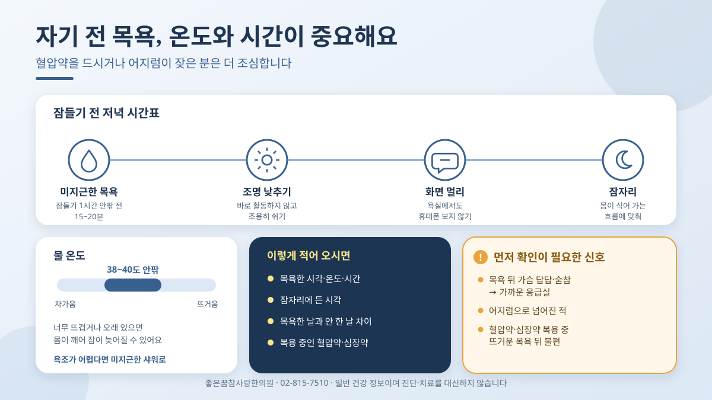

이종호 한의사 감수좋은꿈참사랑한의원 대표원장 (한의사 면허번호 19769)발행 2026-11-22 · 수정 2026-11-26
이 글의 차례
하루를 마치고 뜨거운 물에 몸을 담갔는데, 오히려 잠이 달아난 적 있으신가요? 자기 전 목욕은 잠자리에 드는 데 도움이 될 수 있지만, 언제, 얼마나 뜨겁게, 나와서 무엇을 하느냐에 따라 잠을 부르기도 하고 쫓기도 합니다. 흔히 권하는 기준은 잠들기 1~2시간 전, 뜨겁지 않은 물(대략 38~40도)에 15~20분 정도입니다.
목욕 중이나 뒤에 가슴이 답답하거나 어지러우면 바로 나와 쉬시고, 가슴 통증이나 숨참이 이어지면 가까운 응급실에서 바로 확인을 받으세요.
밤 11시 반. 퇴근하고 저녁을 먹고 밀린 집안일까지 마치고 나니 그제야 욕실 불을 켭니다. 오늘 고생한 몸을 달래 주고 싶어 물을 뜨겁게 받아 어깨까지 담그니 온몸이 녹는 것 같습니다.
그런데 막상 나와서 누우면 얼굴은 화끈거리고 심장은 콩콩 뛰고, 머리는 오히려 맑아집니다. 이불을 걷어찼다 덮었다 하다가 결국 휴대폰을 집어 들고, 새벽 1시가 넘어서야 잠이 듭니다.
진료실에서 이런 말씀을 자주 듣습니다. "목욕하면 잠이 잘 온다던데, 저는 오히려 말똥말똥해져요." 반대로 "따뜻한 물에 들어가야 겨우 몸이 풀려서, 목욕을 못 한 날은 잠이 안 와요" 하시는 분도 계십니다. 두 말씀 모두 그럴 만한 이유가 있습니다.
하루 종일 굳은 몸을 어떻게든 풀어 보려고 애쓰셨을 텐데, 그 정성이 도리어 잠을 쫓는 것 같아 허탈하셨을 겁니다. 목욕이 잘못된 것이라기보다, 시각과 온도와 그 뒤의 한 시간이 조금 어긋났을 때가 많습니다.
왜 목욕이 잠을 부르기도, 쫓기도 할까요
우리 몸의 안쪽 온도는 하루 종일 같지 않습니다. 낮에 조금 올라가 있다가 저녁부터 서서히 내려가는데, 이 흐름이 잠들 준비와 맞물려 있다고 알려져 있습니다.
따뜻한 물에 몸을 담그면 체온이 잠시 올라갔다가, 물에서 나온 뒤 손발의 혈관이 넓어지면서 몸속 열이 바깥으로 빠져나갑니다. 이렇게 체온이 서서히 내려가는 과정이 잠드는 데 도움이 될 수 있다는 것이 자기 전 목욕을 권하는 이유입니다.
그런데 이 흐름에는 시간이 필요합니다. 뜨거운 물에서 나오자마자 이불 속으로 들어가면 몸은 아직 열을 내보내는 중이라 덥고 답답하고, 심장도 빨리 뛰고 있습니다. 목욕을 하고 나서 오히려 정신이 맑아지는 것은 대개 목욕이 잠들기 직전이었거나 물이 너무 뜨거웠을 때입니다.
물 온도도 따져 봐야 합니다. 너무 뜨거운 물에 오래 있으면 땀이 나고 맥이 빨라지면서 몸이 쉬는 쪽이 아니라 깨어나는 쪽으로 움직이기 쉽습니다. 뜨끈해야 개운하다고 느끼는 분이 많지만, 잠을 위한 목욕이라면 따뜻하다고 느낄 정도로 충분합니다.
목욕을 마친 뒤 무엇을 하느냐도 잠에 영향을 줍니다. 밝은 욕실 조명 아래 오래 머물거나, 욕조에서 휴대폰을 보거나, 나오자마자 노트북을 다시 열면 막 쉬려던 몸이 다시 깨어납니다. 목욕은 쉬는 시간의 시작이어야지, 일과 일 사이에 끼워 넣는 일정이 되면 그 뜻이 흐려집니다.
겨울에는 따뜻한 욕실과 차가운 거실, 침실의 온도 차이도 생각해야 합니다. 온도 차가 크면 혈압이 크게 오르내릴 수 있다고 알려져 있어, 어르신이나 혈압약을 드시는 분은 특히 조심하셔야 합니다. 젖은 머리로 찬 방에 들어가 오들오들 떨다 보면 모처럼 데운 몸도 금세 식어 버립니다.
누구에게나 맞는 목욕은 없습니다
식사 이야기를 할 때 제가 자주 드리는 말씀이 있습니다. 누구에게나 좋다는 방법이 어떤 분에게는 맞지 않을 때가 있다는 것입니다. 잡곡이 좋다는 말만 듣고 드시다가 속이 불편해지는 분도 계십니다. 그래서 한 분 한 분께 따로 짚어 드리려고 합니다.
목욕도 마찬가지입니다. 따뜻한 물에 들어가야 몸이 풀리는 분이 있고, 조금만 뜨거워도 가슴이 답답해지는 분이 있습니다. 같은 사람이라도 지친 날과 기운이 있는 날이 다릅니다. 남들이 좋다는 온도와 시간보다 내 몸이 편안한 온도와 시간을 찾는 것이 먼저입니다.
제가 치료를 세게 하기 전에 먼저 여쭙는 것이 세 가지 있습니다. 전에 어지러웠던 적이 있는지, 드시는 약은 무엇인지, 오늘 기운은 어떤지입니다.
뜨거운 물에 들어가기 전에도 이 세 가지를 스스로에게 한번 물어봐 주셨으면 합니다. 어지럼이 잦거나, 혈압약이나 심장약을 드시거나, 오늘 유난히 기운이 없다면 물은 덜 뜨겁게, 시간은 더 짧게 하시는 편이 안전합니다.
저는 치료가 되도록 편안해야 하고, 받고 나서 기분이 좋아야 한다고 생각합니다. 목욕도 그렇습니다. 마치고 나왔을 때 기분이 좋고 몸이 노곤해야지, 기운이 다 빠지고 숨이 차다면 그날 목욕은 몸에 무리였다는 신호입니다.
이런 분들을 자주 뵙습니다
손발이 차서 목욕을 해야 겨우 잠드는 분들이 많습니다. 그런데 목욕하고 나와 머리를 말리고 이런저런 정리를 하다 보면, 정작 누울 때쯤에는 발이 다시 차가워져 있습니다. 이런 분께는 물에서 나오면 발가락 사이까지 물기를 닦고 바로 얇은 양말을 신은 뒤, 미리 데워 둔 이불 속으로 들어가시라고 말씀드립니다.
퇴근이 늦어 씻자마자 눕는 분들도 자주 뵙습니다. 밤 11시에 들어와 샤워하고 바로 누우면 몸도 머리도 아직 바깥의 속도로 달리고 있습니다. 이런 분께는 집에 들어오면 먼저 씻고, 그 뒤에 늦은 저녁이나 정리를 하시도록 순서를 바꿔 보길 권합니다. 씻는 것과 눕는 것 사이에 20~30분이라도 조명을 낮춘 쉬는 시간이 생기기 때문입니다.
뜨거운 탕을 좋아하는 분들도 계십니다. 목욕탕에서 뜨끈하게 몸을 지져야 개운하다고 하시지요. 이런 분께는 물 온도를 한 번에 확 낮추기보다 조금씩 덜 뜨겁게, 시간도 조금씩 짧게 바꿔 보자고 말씀드립니다. 잠을 위한 목욕과 몸을 개운하게 지지는 목욕은 따로 생각하시는 편이 좋습니다.
어르신들께는 겨울 욕실이 조심스러운 곳입니다. 미끄러운 바닥, 차가운 공기, 뜨거운 물에서 일어설 때의 어지럼이 겹칩니다. 욕실을 미리 데우고, 미끄럼 방지 매트를 깔고, 혼자 목욕하실 때는 가족에게 미리 알려 두시라고 말씀드립니다. 식사 직후나 술을 드신 뒤에는 탕 목욕을 피하시는 편이 안전합니다.
아이를 씻기고 재우고 나면 정작 내 몸을 씻을 기운이 남지 않는다는 부모님들도 계십니다. 그런 날은 욕조 목욕을 해야 한다는 생각을 내려놓으셔도 됩니다. 따뜻한 물로 5분만 샤워를 하거나 대야에 발만 10분 담그는 것으로도 쉬는 시간의 문을 열 수 있습니다.

잠들기 2시간 전부터, 이런 순서로 해 보세요
밤 11시 반에 잠자리에 드는 분을 예로 들어 보겠습니다. 9시 반에서 10시 사이에 욕조에 물을 받습니다. 물은 손을 넣었을 때 따뜻하다고 느껴지는 정도, 대략 38~40도 안팎이면 됩니다. 겨울에는 물을 받는 동안 샤워기로 따뜻한 물을 잠시 틀어 두면 욕실 공기가 덜 차갑고, 들어가기 전에는 물 한 컵을 마셔 두세요.
몸은 15~20분, 길어도 30분 안쪽으로 담급니다. 어깨까지 잠기는 것이 답답하다면 가슴 아래까지만 담그는 반신욕도 괜찮습니다. 휴대폰은 욕실 밖에 두고, 욕실 조명은 하나만 켜거나 조금 어둡게 합니다. 어지럽거나 숨이 차면 시간과 상관없이 바로 나옵니다.
물에서 나올 때는 욕조 가장자리를 잡고 천천히 일어섭니다. 물기를 닦고 머리는 바로 말리고, 발에도 물기가 남지 않게 닦은 뒤 얇은 양말을 신습니다.
10시 반부터 11시 반까지는 쉬는 시간입니다. 거실 조명을 낮추고 따뜻한 물을 한두 모금 마시며, 가볍게 목과 어깨를 돌리거나 종이책을 몇 장 읽습니다. 이 시간에 노트북이나 휴대폰 화면을 오래 보면 목욕으로 열어 둔 쉬는 문이 다시 닫힙니다. 그러다 졸음이 오면 그때 잠자리에 듭니다.
욕조가 없거나 시간이 없는 날에는 같은 시각에 미지근한 물로 10분쯤 샤워를 합니다. 마지막에 목 뒤와 어깨에 따뜻한 물을 조금 오래 흘려 주면 몸이 한결 느슨해지는 느낌을 받을 수 있습니다. 발만 10~15분 담그는 족욕도 방법입니다.
매번 완벽하게 하기보다 비슷한 시각에 비슷한 순서를 되풀이하는 쪽을 권합니다. 일주일에 두세 번이라도 같은 흐름을 이어 가면 몸이 그 순서를 쉬는 신호로 기억하기 쉬워집니다.
목욕을 마치고 잠자리에 들기까지 몇 분쯤 걸리셨나요? 물에서 나왔을 때 얼굴이 화끈하고 심장이 빨리 뛰지는 않았나요? 목욕한 날과 하지 않은 날, 잠든 시각이 30분 넘게 차이가 나나요? 목욕을 마친 뒤 다시 화면 앞에 앉지는 않으셨나요? 이 질문들에 대한 답이 다음 목욕의 시각과 온도를 정해 줍니다.
잘 쉬는 것이 먼저입니다
건강을 지키는 순서를 여쭤보시면 저는 이렇게 답합니다. 먼저 잘 쉬고, 아픈 것은 미루지 않고 치료하고, 그다음에 움직이는 것입니다. 운동이 중요하지 않다는 뜻이 아닙니다. 지치고 아픈 몸에 억지로 운동을 얹으면 오래가지 못하기 때문입니다.
목욕을 권하는 것도 같은 마음에서입니다. 하루를 버틴 몸에게 이제 쉬어도 된다고 알려 주는 일이 먼저 있어야 내일 움직일 힘도 생깁니다. 따뜻한 물, 낮은 조명, 느린 숨이 이어지면 몸은 하루가 끝났다는 것을 알아차립니다.
그렇다고 목욕을 매일 밤 숙제처럼 하실 필요는 없습니다. 지친 몸으로 물을 받고 씻고 치우는 일이 또 하나의 짐이 되면 그 부담이 오히려 긴장을 만듭니다. 목욕을 못 하는 날에는 따뜻한 수건으로 목 뒤를 감싸고 몇 분 앉아 있거나, 따뜻한 물 한 잔을 천천히 마시며 조명을 낮추는 것으로도 같은 신호를 보낼 수 있습니다.
반대로 목욕을 하지 않으면 도무지 잠이 오지 않는다고 느끼신다면, 목욕 하나에 잠을 맡겨 두고 있다는 신호일 수 있습니다. 그럴 때는 끼니 시각, 낮의 움직임, 일어나는 시각처럼 하루 전체의 리듬을 함께 살펴보는 편이 좋습니다.

얼마나 지켜보고, 언제 진료를 받을까요
목욕 시각과 온도를 바꿔 보셨다면 2주 정도는 목욕한 시각, 물 온도와 시간, 잠자리에 든 시각과 잠든 것 같은 시각을 적어 보세요. 목욕한 날과 하지 않은 날을 나란히 놓고 보면 내 몸에 맞는 시각이 보이기 시작합니다. 생활을 바꿔도 잠들기 어려운 날이 한 달 넘게 이어지고 낮에도 피곤하다면, 혼자 애쓰지 마시고 상담을 받아 보시길 권합니다.
이런 증상은 먼저 확인이 필요합니다
다음과 같은 경우에는 기다리지 말고 먼저 해당 진료를 받으세요.
- 목욕 중이나 뒤에 가슴이 조이듯 아프거나 숨이 차는 경우(가까운 응급실에서 바로 확인)
- 욕실에서 어지러워 쓰러질 뻔했거나 넘어진 적이 있는 경우
- 심장 질환이 있거나 혈압약을 드시면서 뜨거운 목욕 뒤 불편을 느낀 적이 있는 경우
- 코를 크게 골고 자다가 숨이 멎는 것 같다는 말을 들은 경우(수면 검사를 먼저 권합니다)
- 잠을 거의 못 자는 날이 이어지며 기분이 깊이 가라앉거나 스스로를 해칠 생각이 드는 경우(☎ 109)
임신 중이라면 뜨거운 탕 목욕은 피하시고, 목욕 방법은 담당 산부인과와 먼저 상의해 주세요. 복용 중인 약은 처방한 의사와 상의 없이 줄이거나 끊지 않습니다.
목욕 뒤 증상이 빠르게 심해지거나 욕실에서 쓰러졌다면 한의원 진료를 기다리지 말고 가까운 응급실을 이용하세요. 마음이 너무 힘들어 스스로를 해칠 생각이 들 때는 혼자 견디지 말고 ☎ 109에 바로 도움을 청하세요.
좋은꿈참사랑한의원에 처음 오시면
첫 진료에서는 저녁 시간표부터 여쭙니다. 몇 시에 집에 들어오시는지, 저녁은 몇 시에 드시는지, 목욕이나 샤워는 언제 몇 분쯤 하시는지, 물은 얼마나 뜨겁게 하시는지, 그리고 몇 시에 잠자리에 드시는지. 목욕을 마친 뒤 몸이 노곤해지는지 오히려 맑아지는지, 손발이 금세 식는지, 땀이 오래 나는지도 듣습니다.
걸어오셨다면 바로 맥을 짚지 않고 잠시 앉아 숨을 고르시도록 합니다. 걸어오신 직후나 식사 직후에는 맥이 달라지기 때문입니다. 그러고 나서 양손을 올려 봐 달라고 말씀드리고 손목을 짚으며, 평소 추위와 더위를 어떻게 타시는지, 소화와 대소변은 편한지 여쭙습니다. 필요하다고 판단되면 혀를 보거나 배를 살펴 몸의 온기와 긴장을 함께 확인합니다.
그렇게 들은 이야기를 모아 침이나 한약 상담 등 지금 상태에 맞는 방법을 정하고, 목욕 시각과 물 온도처럼 집에서 바꿔 볼 것도 함께 정합니다. 혈압약이나 심장약을 드시는 분은 목욕 습관을 바꾸기 전에 처방한 의사와 먼저 상의하시도록 말씀드립니다. 다시 오시면 그사이 적어 두신 기록을 함께 보며, 목욕한 날의 잠이 어땠는지부터 이어서 여쭙습니다.
저희 한의원은 잘 쉬다 가는 곳이었으면 합니다. 아파서 오시는 곳이지만 머무시는 동안만큼은 편안하셨으면 해서, 치료 중 온도나 자세, 자극이 불편하시면 언제든 말씀해 달라고 부탁드립니다. 그 말씀이 더 좋은 치료로 이어집니다.
오실 때 목욕한 시각과 물 온도, 담근 시간, 잠자리에 든 시각과 잠든 것 같은 시각, 복용 중인 약을 메모해 오시면 이야기가 훨씬 수월합니다. 빈칸이 있어도 괜찮습니다.
마치며
양생(養生)이라는 말이 있습니다. 양은 아이를 키우는 양육의 양과 같은 글자이고, 생은 생명입니다. 생명을 기르라, 내 몸을 하나하나 아끼고 돌보라는 뜻입니다. 하루를 마치고 따뜻한 물에 몸을 담그는 시간은 그 마음을 가장 가까이에서 실천하는 시간인지도 모릅니다.
목욕이 잠을 약속해 주지는 않습니다. 그래도 이제 쉬어도 된다고 몸에 알려 주는 좋은 신호는 될 수 있습니다. 물이 조금 덜 뜨거워도, 시간이 조금 짧아도 괜찮습니다. 그 뒤의 한 시간을 조용히 비워 두는 것이 목욕을 잠으로 이어 주는 다리입니다.
오늘 밤 목욕을 하신다면 물에서 나온 시각과 잠자리에 든 시각만 기억해 두세요. 다음에 오시면 그 두 시각 사이에 무엇을 하셨는지부터 여쭙겠습니다.
함께 읽으면 좋은 글
- 잠과 컨디션을 위해 식사 시간과 목욕부터 바꾸라는 이유는 뭔가요?
- 잠들기 전 족욕을 할 때는 무엇을 조심하나요?
- 겨울에 뜨거운 물로 목욕하고 일어설 때 어지러우면 어떻게 하나요?

먼저 확인이 필요한 신호
- 목욕 중이나 뒤에 가슴이 조이듯 아프거나 숨이 차는 경우(가까운 응급실에서 바로 확인)
- 욕실에서 어지러워 쓰러질 뻔했거나 넘어진 적이 있는 경우
- 심장 질환이 있거나 혈압약을 드시면서 뜨거운 목욕 뒤 불편을 느낀 적이 있는 경우
왜 목욕이 잠을 부르기도, 쫓기도 할까요
- 우리 몸의 안쪽 온도는 하루 종일 같지 않습니다.
- 낮에 조금 올라가 있다가 저녁부터 서서히 내려가는데, 이 흐름이 잠들 준비와 맞물려…
누구에게나 맞는 목욕은 없습니다
- 식사 이야기를 할 때 제가 자주 드리는 말씀이 있습니다.
- 누구에게나 좋다는 방법이 어떤 분에게는 맞지 않을 때가 있다는 것입니다.
이런 분들을 자주 뵙습니다
- 손발이 차서 목욕을 해야 겨우 잠드는 분들이 많습니다.
- 그런데 목욕하고 나와 머리를 말리고 이런저런 정리를 하다 보면, 정작 누울 때쯤에는…
자주 묻는 질문
목욕을 하면 잠이 꼭 잘 오나요?
결과를 약속하지 않습니다. 긴장을 푸는 데 도움이 될 수 있는 생활 습관입니다.
샤워만 해도 되나요?
샤워도 같은 방식으로 도움이 될 수 있습니다. 온도는 미지근하게 하고, 잠들기 1~2시간 전쯤 하는 편을 권합니다.
약을 먹고 있어도 목욕해도 되나요?
혈압약 등을 드시는 분은 뜨거운 목욕 뒤 어지럼이 있을 수 있어 처방한 의사와 상의하세요.
반신욕이 더 나은가요?
사람마다 편한 방법이 다릅니다. 숨이 차거나 어지럽지 않은 범위에서 미지근하게 하는 것이 기본입니다.
술을 마신 날에도 목욕하고 자도 되나요?
술을 마신 날에는 뜨거운 탕 목욕이나 사우나는 피하고, 미지근한 물로 짧게 씻는 정도를 권합니다. 어지럼과 넘어짐의 위험이 커질 수 있기 때문입니다.
좋은꿈참사랑한의원은 재진 때 지난번 이야기부터 이어서 여쭙니다. 진료시간과 예약은 오시는 길에서 확인하세요.
어디서 상담받을 수 있나요?
좋은꿈참사랑한의원은 서울 동작구 만양로2길 2 신성빌딩 3층·5층(서울 동작구 상도동, 7호선 상도역 3번 출구 근처)에 있습니다. 한의사 3명(이종호 대표원장, 조영기 수석진료원장, 정원영 진료원장)이 진료합니다. 진료시간은 평일 09:30~20:00(점심 13:00~14:00), 토·일·공휴일 09:30~15:00이며, 방문 전 전화로 확인을 권합니다. 예약은 네이버 예약, 카카오톡 상담, 전화 02-815-7510로 받습니다.
이 글은 일반적인 건강 정보이며 개인의 진단이나 치료를 대신하지 않습니다. 증상이 있거나 복용 중인 약이 있다면 진료를 통해 확인하세요. 치료 효과는 개인마다 다를 수 있습니다.
작성 기준: 일반적으로 알려져 있는 건강 정보를 참고해 정리했습니다(대표원장 감수). 증상 기록은 1~2주 동안 하루 1회, 비슷한 시간에 적어 오시면 지난 상태와 비교하기 쉽습니다.